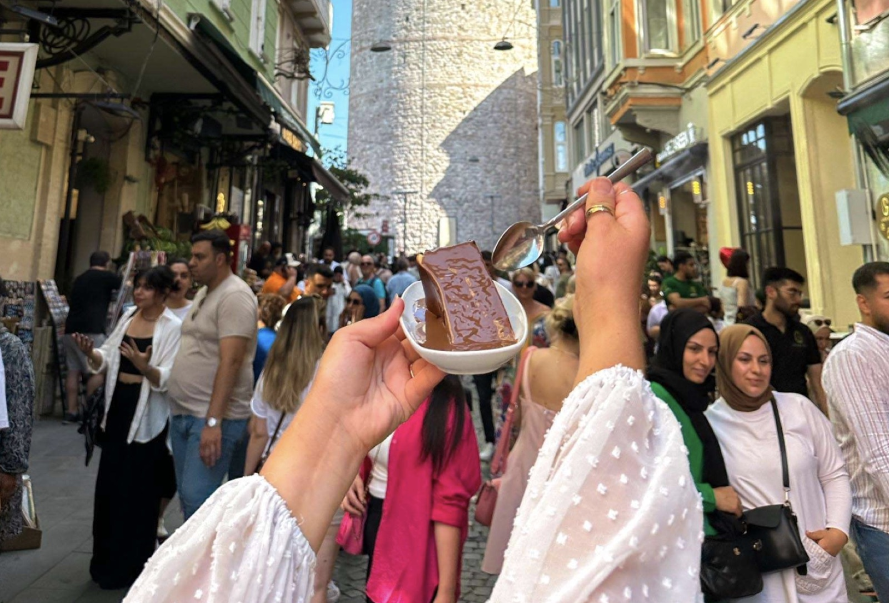

Avrupa · Europe
one city,
two
continents.
Asya · Asia
a 15-minute ferry between Avrupa and Asya, cheaper than a grande latte.
on the European side
the old city.
Hagia Sophia, the Blue Mosque, the Grand Bazaar, all within a 10-minute walk. Start your morning here, and don't skip the simit cart on the corner.
See attractions →
on the Asian side
where locals eat.
Kadıköy is messier, younger, cheaper, and where every Istanbul food TikTok is filmed. Cross by ferry, not the bridge.
Eat guide →where next →
A glimpse of the bridge between East and West.